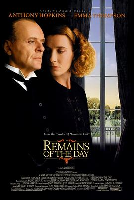

告别有情天 / The Remains of the Day
又名：长日将尽(台) / 去日留痕 / 长日留痕
服化道很漂亮，没想到这时候的休叔这么年轻水嫩。但镜头没办法很好地体现石黑一雄笔下“不可靠叙事”的魅力，只在最后长廊交谈时给我一点内心触动。其实没有两情相悦肯顿小姐与史蒂芬都有错，都在逃避皆藏着掖着没讲出接下来的最重要的一句话。史蒂芬甚至最后还在逃避到工作中。
作品信息
| 导演 | 詹姆斯·伊沃里 |
| 编剧 | 鲁丝·普罗厄·贾布瓦拉 / 石黑一雄 |
| 主演 | 安东尼·霍普金斯 / 艾玛·汤普森 / 詹姆斯·福克斯 / 克里斯托弗·里夫 / 休·格兰特 / 皮特·沃恩 / 本·卓别林 / 阿比盖尔·霍普金斯 / 帕特里克·戈弗雷 / 彼得·塞利尔 / 特伦斯·贝勒 / 迈克尔·朗斯代尔 / 约翰·萨维登特 / 鲁珀特·范西塔特 / 蒂姆·皮戈特-史密斯 / 琳娜·海蒂 / 保罗·柯普雷 / 伊恩·雷德福 / 皮普·托伦斯 / 彼得·爱 / 沃尔夫·卡赫勒 / 米尔斯·理查森 |
| 类型 | 剧情 / 爱情 |
| 制片国家/地区 | 英国 / 美国 |
| 语言 | 英语 / 德语 / 法语 |
| 上映日期 | 1993-11-12(英国) / 1993-11-19(美国) |
| 片长 | 134分钟 |
| IMDb | tt0107943 |
说过什么
2026-03-24 23:22:25
广播 · 看过 · ★★★★☆
服化道很漂亮，没想到这时候的休叔这么年轻水嫩。但镜头没办法很好地体现石黑一雄笔下“不可靠叙事”的魅力，只在最后长廊交谈时给我一点内心触动。其实没有两情相悦肯顿小姐与史蒂芬都有错，都在逃避皆藏着掖着没讲出接下来的最重要的一句话。史蒂芬甚至最后还在逃避到工作中。
2022-06-01 12:40:40
广播 · 想看
最后一次看到是 2026-10-07T23:12:49+08:00 · 豆瓣原页